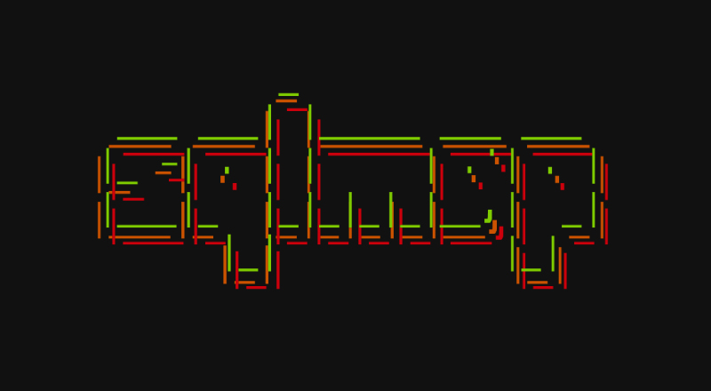

Sqlmap
O sqlmap é uma ferramenta de código aberto projetada para automatizar o processo de detecção e exploração de vulnerabilidades de injeção SQL em aplicações web. Ela permite identificar falhas de segurança em bancos de dados e extrair informações de forma automatizada.
Principais Funcionalidades:
- Detecção automática de diferentes tipos de injeção SQL
- Extração de dados de bancos de dados vulneráveis
- Enumeração de bancos, tabelas, colunas e usuários
- Execução de comandos no sistema operacional via banco de dados
- Suporte a múltiplos bancos de dados (MySQL, PostgreSQL, Oracle, SQL Server, etc.)
Recomendado para:
Testes de penetração em ambientes controlados, laboratórios de segurança e simulações de ataques no Red Team.
🔗 Site Oficial